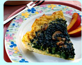

Quiche Florentine 6 servings

Quiche is really a wonderful dish. Our guests generally love it. This is especially pretty to serve and tastes great too. Add some grated carrot and tomato slices to the plate as a garnish and you have a picture that is almost too pretty to eat, but do!
~ Jacue Van Der Wilde former innkeeper
Things you'll need
- Cooking spray
- 6 eggs, divided
- 1/2 teaspoon garlic powder, divided
- 1/4 cup grated Parmesan cheese
- 1/2 cup orzo (rice-shaped pasta), cooked and drained
- 1/2 cup skim or low-fat milk
- 1 teaspoon Italian seasoning, crushed
- 1 package (10 oz.) frozen chopped spinach, thawed, drained and pressed
- 1 can (2 oz.) sliced mushrooms, drained
- Nectarine slices, optional
getting started
- Evenly coat deep 9-inch pie plate with spray. Set aside.
- In medium bowl, beat together 1 of the eggs, 1/4 teaspoon of the garlic powder and the cheese.
- Stir in orzo until well combined.
- To form crust, spread orzo mixture over bottom and up sides of pie plate.
- In medium bowl, beat together remaining 5 eggs, remaining 1/4 teaspoon garlic powder, milk and seasoning until well blended.
- Stir in spinach and mushrooms until well combined.
- Pour into prepared crust.
- Bake in preheated 375° F oven until puffed in center and knife inserted near center comes out clean, about 30 to 40 minutes.
- Let stand 5 minutes before serving.
- Garnish with nectarine slices, if desired.
Nutrition information per serving of 1/6 recipe using skim milk without optional ingredients: 173 calories, 6 gm total fat, 215 mg cholesterol, 196 mg sodium, 295 mg potassium, 17 gm carbohydrate, 12 gm protein and 10% or more of the RDI for vitamins A and C, riboflavin, thiamin, calcium, iron, phosphorus